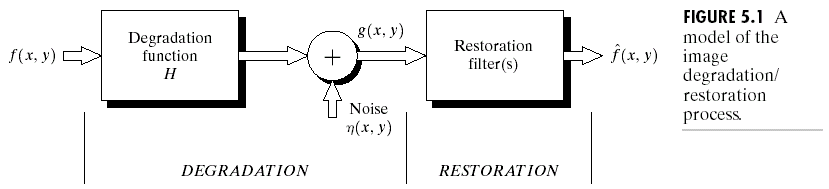
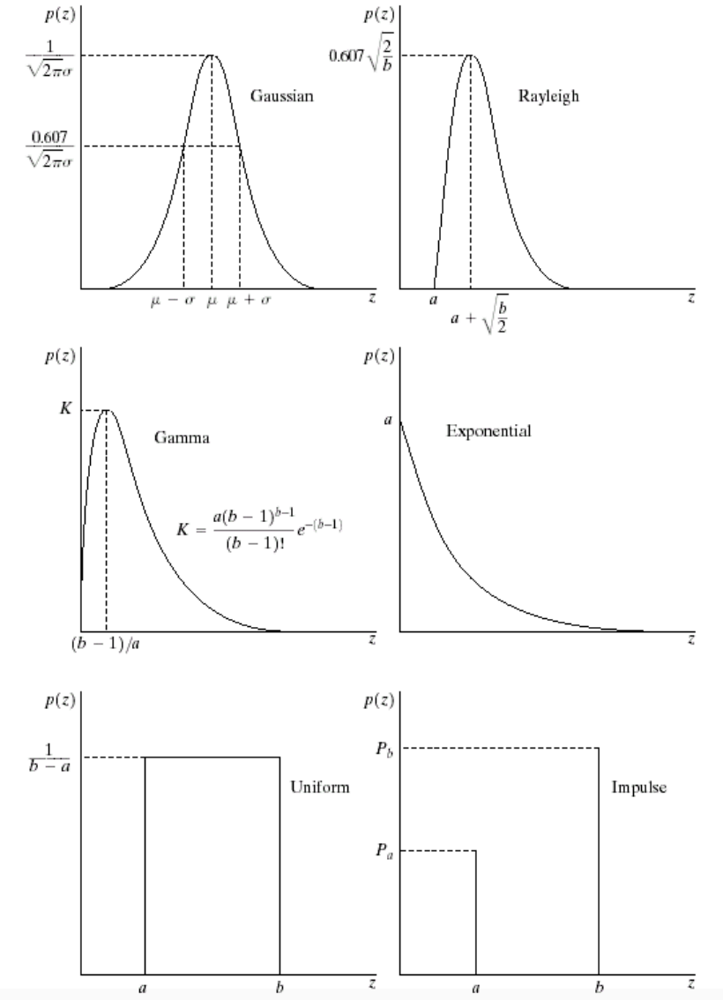

数字图像处理(5)：图像复原
Last updated on November 20, 2025 am
这是SJTU-CS3324《数字图像处理》课程的知识点整理系列。本文整理部分为“第 5 章：图像复原”。
图像复原的目标与基本概念
- 图像复原的目标: 提升图像质量（可以是主观的或客观的）
- 图像增强与图像复原的区别:
- 图像增强 (Image Enhancement):
- 主观性 (Subjective): 这是一个主观的过程，目的是让处理后的图像在视觉上更适合于某个特定应用
- 无先验模型: 通常不考虑图像是如何“变坏”的，没有一个具体的退化模型
- 图像复原 (Image Restoration):
- 客观性 (Objective): 这是一个客观的过程，试图将退化（degraded）的图像恢复到其原始状态
- 基于先验模型: 图像复原试图对退化过程进行建模，需要事先知道（或估计出）图像退化的原因，例如模糊的类型、噪声的统计特性等
- 逆过程: 复原可以看作是退化过程的逆向操作 (reverse of the degradation)
- 图像增强 (Image Enhancement):
图像退化/复原过程的模型 (Model of the Image Degradation/Restoration Process)

模型结构
- 退化过程 (DEGRADATION):
- 原始的、清晰的图像 首先经过一个退化函数 （Degradation function）的处理
- 这个函数 H 模拟了造成图像质量下降的各种因素，最典型的是模糊
- 然后，一个与图像内容无关的噪声项 （Noise）以加性的方式被引入
- 最终得到我们观察到的、质量下降的图像
- 复原过程 (RESTORATION):
- 将退化图像 输入到一个或多个复原滤波器（Restoration filter(s)）中
- 滤波器的目标是产生一个对原始图像的最佳估计
- 理想情况下，我们希望 尽可能地接近
模型的数学表示
- 通用形式:
- 线性、位置不变 (LPI) 系统下的简化: 如果退化函数 是一个线性、位置不变 (Linear, Position-Invariant, LPI) 的系统，模型可以被大大简化
- 空间域 (Spatial Domain): 当 是 LPI 系统时，退化过程在空间域表现为卷积
- 频率域 (Frequency Domain): 根据卷积定理，空间域的卷积等价于频率域的乘法
- 空间域 (Spatial Domain): 当 是 LPI 系统时，退化过程在空间域表现为卷积
噪声模型与噪声去除 (Noise Model & Noise Reduction)
这一部分聚焦于退化模型中的噪声项 ，探讨它的来源、数学模型以及如何去除它。
噪声的来源与分类
- 主要来源:
- 图像采集 (Image Acquisition): 图像传感器的性能和工作环境是噪声的主要来源，例如电路噪声、传感器因光照不足或温度过高产生的噪声
- 图像传输 (Image Transmission): 图像在信道中传输时，可能会受到电磁干扰等，从而引入噪声
- 随机噪声: 当退化只有噪声时（ 为单位算子），主要使用空间滤波 (Spatial Filtering) 来处理
- 周期噪声: 主要使用频率域滤波 (Frequency Domain Filtering) 来处理
随机噪声的数学模型 (Noise Models for Random Noise)
- 基本假设:
- 噪声在空间上是独立的（周期噪声除外），并且与图像内容本身也无关
- 噪声被看作是随机变量，其特性可以通过其概率密度函数 (Probability Density Function, PDF) 来描述

- 常见的噪声 PDF 模型:
- 高斯噪声 (Gaussian Noise):
- 成因:来源于电子电路噪声、传感器在光照不足或高温下的噪声
- PDF: 呈经典的钟形曲线
- 瑞利噪声 (Rayleigh Noise):
- 成因: 主要用于描述距离图像 (range imaging) 中的噪声
- PDF: 是向右偏斜的
- 爱尔兰(伽马)噪声 (Erlang (Gamma) Noise) & 指数噪声 (Exponential Noise):
- 成因: 常用于描述激光成像中的噪声
- PDF: 都是向右偏斜的，指数噪声是伽马噪声的一个特例
- 均匀噪声 (Uniform Noise):
- 成因: 来源于量化过程中的误差。
- PDF: 在某个范围内，每个灰度值出现的概率是均等的
- 脉冲噪声(椒盐噪声) (Impulse (Salt-and-Pepper) Noise):
- 成因: 由快速的瞬时干扰引起
- PDF: 只有两个值（通常是 0 和 255），表现为图像中的纯黑点（“胡椒”）和纯白点（“盐”）
- 高斯噪声 (Gaussian Noise):
周期噪声 (Periodic Noise)
- 成因: 主要来源于图像采集过程中电力或机电设备的干扰
- 特性:
- 空间依赖性 (Spatial Dependence): 与随机噪声不同，周期噪声在空间上不是独立的，而是呈现周期性重复的模式
- 频域表现: 周期噪声在频率域表现得非常明显，通常是在频谱图上出现成对的、孤立的亮点（脉冲）
噪声参数的估计 (Estimation of Noise Parameters)
- 目的: 为了选择合适的滤波器并设置其参数，我们需要估计出图像中噪声的统计特性，如均值、方差等
- 估计方法:
- 周期噪声: 直接观察图像的频谱图 (Frequency Spectrum)，找到其中的亮点，即可确定其频率和方向
- 随机噪声:
- 情况1：成像系统可用: 拍摄一张“平坦”环境的图像，理论上该图像所有像素值应相同，实际的波动就完全由噪声引起，直接分析这张噪声图像的直方图和统计量即可
- 情况2：只有带噪图像: 在带噪图像中，选取一小块内容相对恒定的区域（即图像本身的灰度变化很小），然后分析这个小块的直方图
- 这个小块的直方图形状可以近似看作是噪声的 PDF，通过计算这个小块的均值和方差，就可以估计出噪声的参数
仅有加性噪声时的复原 - 空间滤波
当退化模型简化为 时，可以使用各种空间滤波器来抑制噪声 ，这些技术与上一章“图像增强”中的平滑滤波非常相似。
- 均值滤波器 (Mean Filters): 算术均值滤波器、几何均值滤波器、谐波均值滤波器、逆谐波均值滤波器
- 顺序统计滤波器 (Order-statistics Filters): 中值滤波器、最大/最小值滤波器、中点滤波器、阿尔法截尾均值滤波器
- 自适应滤波器 (Adaptive Filters): 滤波器的行为会根据邻域的局部统计特性进行自适应调整
周期噪声的去除 - 频率域滤波
由于周期噪声在频谱图上表现为孤立的亮点，因此可以在频率域精确地将其滤除。
- 带阻滤波器 (Bandreject Filters): 拒绝特定频率范围内的信号通过
- 如理想、巴特沃斯和高斯三种类型的带阻滤波器，它们可以在以原点为中心的环形区域内抑制频率分量
- 陷波滤波器 (Notch Filters): 带阻滤波器的推广，它可以在频谱图的任意位置拒绝（或通过）一个预定义邻域内的频率
线性、位置不变的退化 (Linear, Position-Invariant Degradations)
- 线性 (Linear):
- 位置不变 (Position-Invariant): 退化效果与图像内容的位置无关，在 A 处造成的模糊和在 B 处造成的模糊是完全一样的
- 数学上讲，如果对输入的平移会导致输出产生完全相同的平移，那么该系统就是位置不变的
其中 是任意的空间位移
- 数学上讲，如果对输入的平移会导致输出产生完全相同的平移，那么该系统就是位置不变的
- 将退化过程表达为卷积: 当 H 是LPI系统时，退化过程在空间域表现为卷积
其中 是退化函数 的脉冲响应，也称为点扩散函数 (Point Spread Function, PSF)，它描述了系统对一个单位点光源的响应，即一个理想的点光源在经过退化系统后会变成什么样子
连续图像的复原 (Restoration for Continuous Images)
参考资料
本文参考上海交通大学电子工程系《数字图像处理》课程 CS3324 闵雄阔老师的 PPT 课件整理。
数字图像处理(5)：图像复原
https://cny123222.github.io/2025/11/20/数字图像处理-5-：图像复原/